奥干
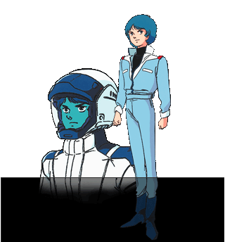
カミーユ•ビダン（KAMIRU BIDAN）
エゥーゴ：パイロット(中尉待遇)
ガンダムMk-Ⅱ、Zガンダムのパイロット。女性のような名前にコンプレックスを持ち、空手、ホモ•アビス、ジュニア•モビルスーツなどに手を染めた。
ジェリドに名前を馬鹿にされ、殴り掛かった事を起因としてティターンズよりガンダムMk-Ⅱを奪い、アーガマに保護されることとなる。
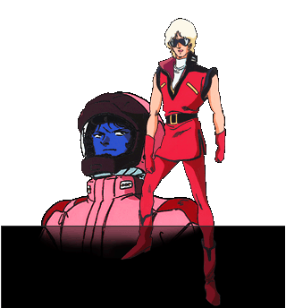
クワトロ•バジーナ（QUATTRO VAGEENA）
エゥーゴ：大尉
かつて｢赤い彗星｣と呼ばれたパイロットであり、ジオン•ズム•ダイクンの息子でもある。一年戦争後はアクシズに身を寄せていたが、地球圏偵察の名目で｢クワトロ•バジーナ｣を名乗って連邦軍に入った。
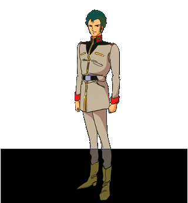
ブライト•ノア（BRIGHT NOA）
エゥーゴ：大佐
一年戦争でのホワイトベースの艦長。戦後は軍に残り、シャトル•テンプテーションのキャプテンをしていたが、ティターンズに迫害されていたグリーン•オアシスの人たちを連れて逃げていたところをアーガマに救助される。
以後、エゥーゴに身を置き、ヘンケンよりアーガマの艦長職を引き継ぐ。
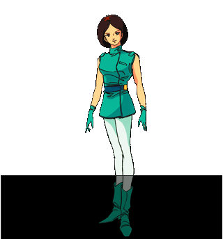
エマ•シーン（EMMA SHEEN）
エゥーゴ：中尉
ティターンズのパイロットであったが、バスクのやり口にティターンズを見限り、エゥーゴに参加した。
志の高い両親のもとで育ち、自立している。異性に対しての関心はあまりなく、ヘンケンのアプローチを当初迷惑に思っていたが、その一途な思いにほだされていく。
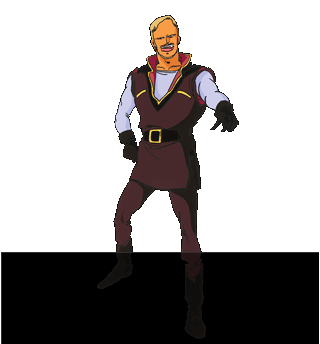
ヘンケン•ベッケナー（HENKEN BELLENER）
エゥーゴ：中佐
初代アーガマ艦長。後に戦艦•ラーディッシュの指揮をとる。
エゥーゴの中核メンバーの一人でもあり、出資者たちとの会合では自ら護衛役につくこともある。
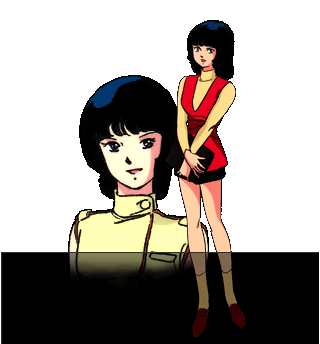
ファ•ユイリィ（FA YUIRY）
エゥーゴ：軍曹
カミーユの幼なじみで同じハイスクールに通っていた。カミーユの知り合いということでバスクに捕まりそうだったところをブライトに助けられ、アーガマに保護された。
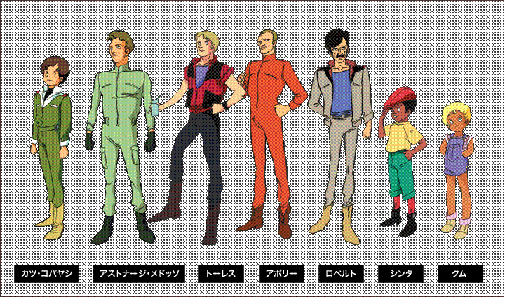
提坦斯
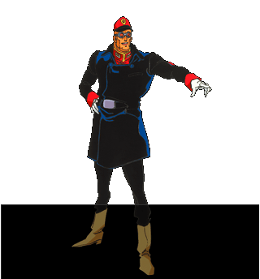
バスク•オム（BASK OM）
ティターンズ：大佐
ティターンズの指揮官。
アースノイド至上のエリート意識に取り付かれており、目的のためにはあらゆる手段も正当化されると思っている。
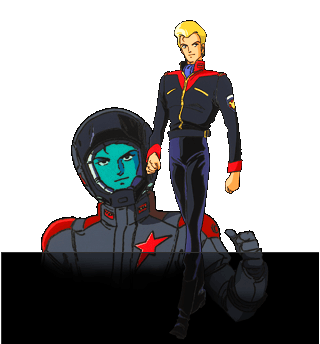
ジェリド•メサ（JERID MESSA）
ティターンズ：中尉
ティターンズのMSパイロット。ハイザック、マラサイ、ガブスレイ、バイアランなどに乗る。
グリーン•ノア1でカミーユに放った一言が、彼とカミーユの運命を大きく変えた。
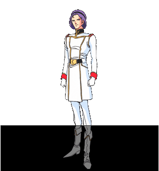
パプテマス•シロッコ（PAPTIMUS SCIROCCO）
地球連邦軍→ティタｰンズ：大尉
巨大輸送船•ジュピトリスのキャプテンである｢木星帰りの男｣。
MSの設計者でありパイロットでもあり、メッサーラ、ジ•オなどを操る。
ジャミトフに血判の誓約書を提出しティターンズにつくが、彼自身そんなものは紙切れでしかないと考えていたことが後に証明される。
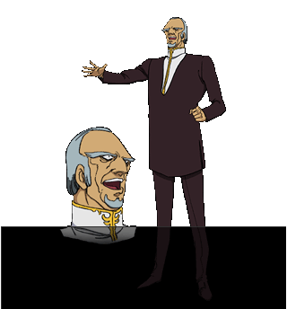
ジャミトフ•ハイマン（JAMITOV HYMEM）
地球連邦軍：大将
ティターンズの創設者。地球圏の統制をもくろんでおり、議会その他にそのための布石を打つ。が、結果としてハマーンやシロッコによって利用される形になった。

サラ•ザビアロフ（SARAH ZABIAROV）
ティターンズ•曹長
シロッコの部下の少女パイロット。シロッコに心酔しており｢パプテマス様｣と呼ぶ。
ヤザンに、強化人間として疑われるほど強大なニュータイプ能力を見せていた。自分に好意を寄せるカツを憎からず思うが、ただ優しいだけの彼の全部は好きにはなれなかった。
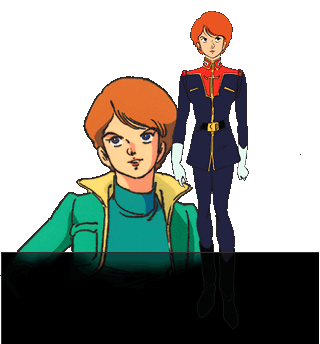
レコア•ロンド（RECCOA LONDE）
エゥーゴ→ティターンズ•少尉
エゥーゴのメンバーで、類希なる記憶力を生かしたスパイ活動をまかされることが多かったが、後にティターンズに回る。
ジュピトリスでシロッコに出会ったことで、アーガマには自分の求めるものがないと悟り、ヤザンの強烈な生気にひかれるかたちでティターンズへ身を投じ、シロッコの元で戦うことになる。
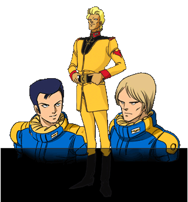
中央；ヤザン•ゲーブル（YAZAN GABLE）
左：ダンケル
右：ラムサス•ハサ
ティターンズ•中尉→大尉
ティターンズのMSパイロット。ギャプラン、ハンブラビに搭乗。
軍規お構いなしに戦う、狂暴で野獣のような男であるが、シロッコとは腹に一物を持つもの同士なのか、馬があう。
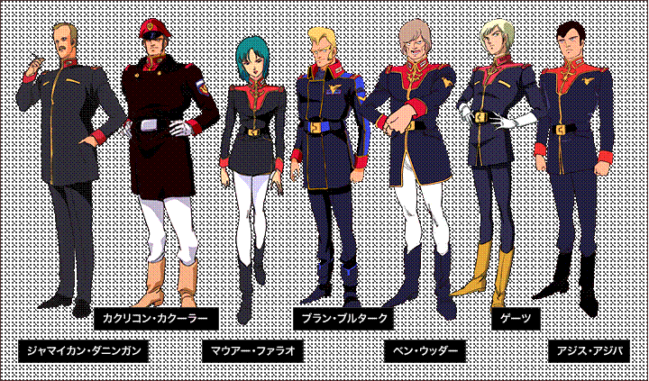
地球联邦军
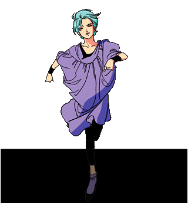
フォウ•ムラサメ（FOUR MURASAME）
地球連邦軍•少尉
ニュータイプ研究施設•ムラサメ研究所の4番目の被験体。戦災孤児であり、施設に昔の記憶を盾に取られている。
ベン•ウッダーへの増援としてサイコ•ガンダムとともに送られてきた。
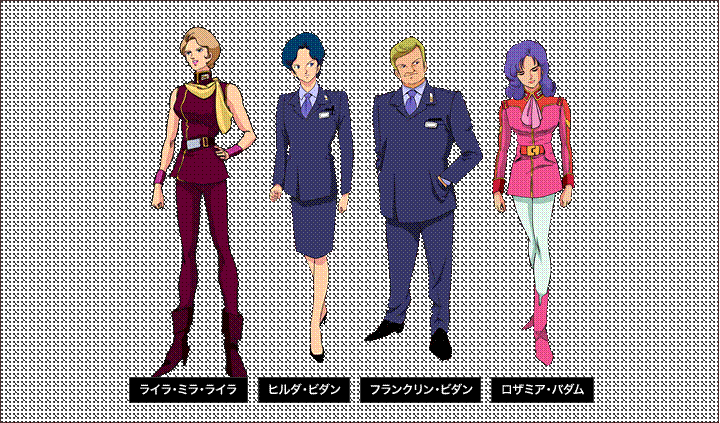
卡拉巴
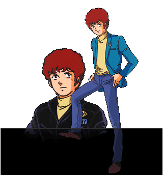
アムロ•レイ（AMURO RAY）
地球連邦軍→カラバ•大尉
リック•ディアス、ディジェのパイロット。一年戦争後は、北米シャイアン基地勤務による半幽閉状態にあった。
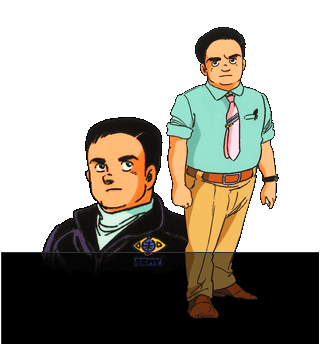
ハヤト•コバヤシ（HAYATO KOBAYASHI）
カラバ
一年戦争後、地球連邦政府の監視下にあった。ケネディの戦争博物館の館長をしながら、カラバの活動をおこなっている。
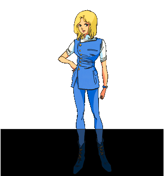
ベルトーチカ•イルマ（BELTORCHIKA IRMA）
カラバ
ヒッコリーの女性スタッフ。自らビーチクラフト•コメットを駆って伝令に走ったり、シャアのダカール演説の事前工作をしたりの行動派。
阿克西斯
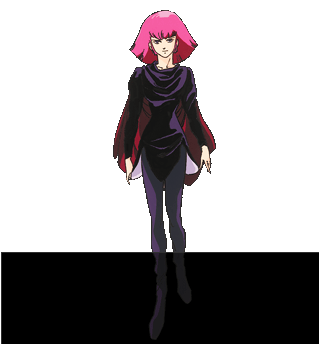
ハマーン•カーン（HAMAN KARN）
アクシズ•摂政
ジオン公国の残党が有する小惑星基地•アクシズの実質的な指導者。ザビ家の血をひくミネバを擁し、地球圏にジオンの復興をもくろむ。成人したのを機に、アクシズを率いて地球圏へ帰ってきた。
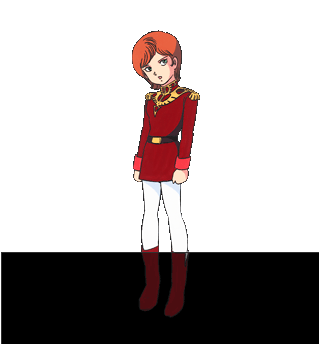
ミネバ•ラオ•ザビ（MINEVA LAO ZABI）
アクシズ（ネオ•ジオン）•総帥
ドズル•ザビの忘れ形見。アクシズでハマーンによって教育されたせいでハマーンの傀儡のようにしゃべるが、モルガルテンでシンタ達と遊んだ様子からもわかるように本当は素直なこころをもった少女である。
平民
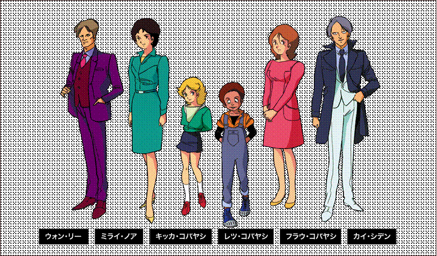